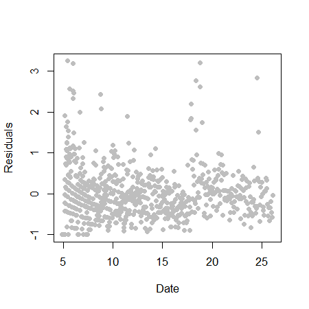
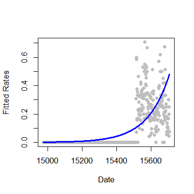

- Many data take the form of counts
- Calls to a call center
- Number of flu cases in an area
- Number of cars that cross a bridge
- Data may also be in the form of rates
- Percent of children passing a test
- Percent of hits to a website from a country
- Linear regression with transformation is an option
Count outcomes
Jeffrey Leek, Assistant Professor of Biostatistics
Johns Hopkins Bloomberg School of Public Health
Key ideas
Poisson distribution
set.seed(3433); par(mfrow=c(1,2))
poisData2 <- rpois(100,lambda=100); poisData1 <- rpois(100,lambda=50)
hist(poisData1,col="blue",xlim=c(0,150)); hist(poisData2,col="blue",xlim=c(0,150))

Poisson distribution
c(mean(poisData1),var(poisData1))
[1] 49.85 49.38
c(mean(poisData2),var(poisData2))
[1] 100.12 95.26
Example: Leek Group Website Traffic

Website data
download.file("https://dl.dropboxusercontent.com/u/7710864/data/gaData.rda",destfile="./data/gaData.rda",method="curl")
load("./data/gaData.rda")
gaData$julian <- julian(gaData$date)
head(gaData)
date visits simplystats julian
1 2011-01-01 0 0 14975
2 2011-01-02 0 0 14976
3 2011-01-03 0 0 14977
4 2011-01-04 0 0 14978
5 2011-01-05 0 0 14979
6 2011-01-06 0 0 14980
Plot data
plot(gaData$julian,gaData$visits,pch=19,col="darkgrey",xlab="Julian",ylab="Visits")

Linear regression
\[ NH_i = b_0 + b_1 JD_i + e_i \]
\(NH_i\) - number of hits to the website
\(JD_i\) - day of the year (Julian day)
\(b_0\) - number of hits on Julian day 0 (1970-01-01)
\(b_1\) - increase in number of hits per unit day
\(e_i\) - variation due to everything we didn't measure
Linear regression line
plot(gaData$julian,gaData$visits,pch=19,col="darkgrey",xlab="Julian",ylab="Visits")
lm1 <- lm(gaData$visits ~ gaData$julian)
abline(lm1,col="red",lwd=3)

Linear vs. Poisson regression
Linear
\[ NH_i = b_0 + b_1 JD_i + e_i \]
or
\[ E[NH_i | JD_i, b_0, b_1] = b_0 + b_1 JD_i\]
Poisson/log-linear
\[ \log\left(E[NH_i | JD_i, b_0, b_1]\right) = b_0 + b_1 JD_i \]
or
\[ E[NH_i | JD_i, b_0, b_1] = \exp\left(b_0 + b_1 JD_i\right) \]
Multiplicative differences
\[ E[NH_i | JD_i, b_0, b_1] = \exp\left(b_0 + b_1 JD_i\right) \]
\[ E[NH_i | JD_i, b_0, b_1] = \exp\left(b_0 \right)\exp\left(b_1 JD_i\right) \]
If \(JD_i\) is increased by one unit, \(E[NH_i | JD_i, b_0, b_1]\) is multiplied by \(\exp\left(b_1\right)\)
Poisson regression in R
plot(gaData$julian,gaData$visits,pch=19,col="darkgrey",xlab="Julian",ylab="Visits")
glm1 <- glm(gaData$visits ~ gaData$julian,family="poisson")
abline(lm1,col="red",lwd=3); lines(gaData$julian,glm1$fitted,col="blue",lwd=3)

Mean-variance relationship?
plot(glm1$fitted,glm1$residuals,pch=19,col="grey",ylab="Residuals",xlab="Date")

Model agnostic standard errors
library(sandwich)
confint.agnostic <- function (object, parm, level = 0.95, ...)
{
cf <- coef(object); pnames <- names(cf)
if (missing(parm))
parm <- pnames
else if (is.numeric(parm))
parm <- pnames[parm]
a <- (1 - level)/2; a <- c(a, 1 - a)
pct <- stats:::format.perc(a, 3)
fac <- qnorm(a)
ci <- array(NA, dim = c(length(parm), 2L), dimnames = list(parm,
pct))
ses <- sqrt(diag(sandwich::vcovHC(object)))[parm]
ci[] <- cf[parm] + ses %o% fac
ci
}
http://stackoverflow.com/questions/3817182/vcovhc-and-confidence-interval
Estimating confidence intervals
confint(glm1)
2.5 % 97.5 %
(Intercept) -34.34658 -31.159716
gaData$julian 0.00219 0.002396
confint.agnostic(glm1)
Rates
\[ E[NHSS_i | JD_i, b_0, b_1]/NH_i = \exp\left(b_0 + b_1 JD_i\right) \]
\[ \log\left(E[NHSS_i | JD_i, b_0, b_1]\right) - \log(NH_i) = b_0 + b_1 JD_i \]
\[ \log\left(E[NHSS_i | JD_i, b_0, b_1]\right) = \log(NH_i) + b_0 + b_1 JD_i \]
Fitting rates in R
glm2 <- glm(gaData$simplystats ~ julian(gaData$date),offset=log(visits+1),
family="poisson",data=gaData)
plot(julian(gaData$date),glm2$fitted,col="blue",pch=19,xlab="Date",ylab="Fitted Counts")
points(julian(gaData$date),glm1$fitted,col="red",pch=19)

Fitting rates in R
glm2 <- glm(gaData$simplystats ~ julian(gaData$date),offset=log(visits+1),
family="poisson",data=gaData)
plot(julian(gaData$date),gaData$simplystats/(gaData$visits+1),col="grey",xlab="Date",
ylab="Fitted Rates",pch=19)
lines(julian(gaData$date),glm2$fitted/(gaData$visits+1),col="blue",lwd=3)

More information
- Log-linear models and multiway tables
- Wikipedia on Poisson regression, Wikipedia on overdispersion
- Regression models for count data in R
- pscl package - the function zeroinfl fits zero inflated models.